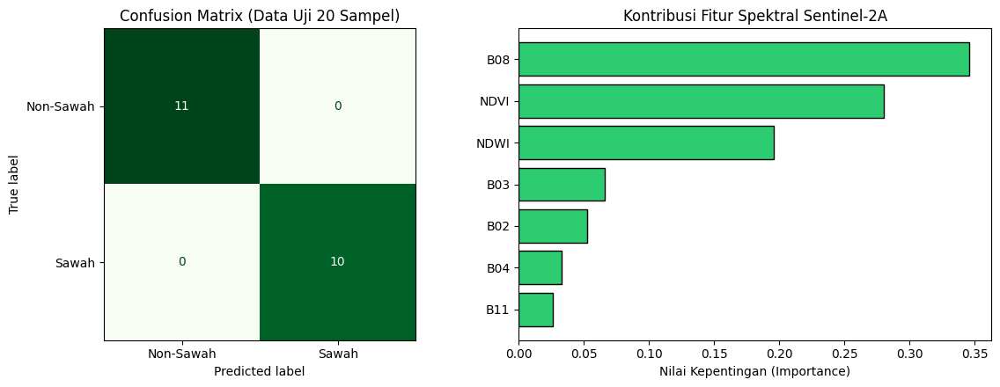
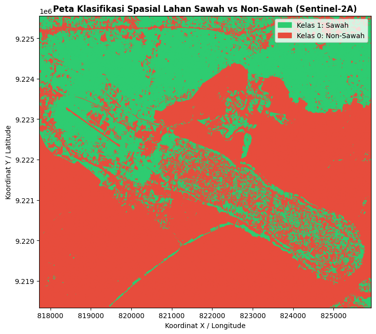

Analisis Tutupan Lahan Sawah dan Non-Sawah#
Tahapan analisis menggunakan citra Sentinel-2A Level-2A yang diambil melalui
openEO dalam bentuk file GeoTIFF (.tif). Citra tersebut digunakan untuk
mengambil nilai spektral berdasarkan titik-titik sampel yang sudah ditentukan.
Data referensi terdiri dari 100 sampel, yaitu 50 sampel Sawah dan 50 sampel Non-Sawah. Seluruh titik telah diberi label berdasarkan hasil penentuan objek menggunakan QGIS. Data nilai spektral dari masing-masing sampel kemudian dimanfaatkan untuk proses klasifikasi biner dengan dua kategori, yaitu Sawah dan Non-Sawah.
pip install geopandas
Requirement already satisfied: geopandas in /usr/local/python/3.12.1/lib/python3.12/site-packages (1.1.4)
Requirement already satisfied: numpy>=1.24 in /usr/local/python/3.12.1/lib/python3.12/site-packages (from geopandas) (2.5.2)
Requirement already satisfied: pyogrio>=0.7.2 in /usr/local/python/3.12.1/lib/python3.12/site-packages (from geopandas) (0.13.0)
Requirement already satisfied: packaging in /home/codespace/.local/lib/python3.12/site-packages (from geopandas) (26.0)
Requirement already satisfied: pandas>=2.0.0 in /usr/local/python/3.12.1/lib/python3.12/site-packages (from geopandas) (2.3.3)
Requirement already satisfied: pyproj>=3.5.0 in /usr/local/python/3.12.1/lib/python3.12/site-packages (from geopandas) (3.7.2)
Requirement already satisfied: shapely>=2.0.0 in /usr/local/python/3.12.1/lib/python3.12/site-packages (from geopandas) (2.1.2)
Requirement already satisfied: python-dateutil>=2.8.2 in /home/codespace/.local/lib/python3.12/site-packages (from pandas>=2.0.0->geopandas) (2.9.0.post0)
Requirement already satisfied: pytz>=2020.1 in /usr/local/python/3.12.1/lib/python3.12/site-packages (from pandas>=2.0.0->geopandas) (2026.3.post1)
Requirement already satisfied: tzdata>=2022.7 in /home/codespace/.local/lib/python3.12/site-packages (from pandas>=2.0.0->geopandas) (2025.3)
Requirement already satisfied: certifi in /home/codespace/.local/lib/python3.12/site-packages (from pyogrio>=0.7.2->geopandas) (2026.2.25)
Requirement already satisfied: six>=1.5 in /home/codespace/.local/lib/python3.12/site-packages (from python-dateutil>=2.8.2->pandas>=2.0.0->geopandas) (1.17.0)
[notice] A new release of pip is available: 26.0.1 -> 26.2.1
[notice] To update, run: python3 -m pip install --upgrade pip
Note: you may need to restart the kernel to use updated packages.
pip install openeo
Requirement already satisfied: openeo in /usr/local/python/3.12.1/lib/python3.12/site-packages (0.51.0)
Requirement already satisfied: requests>=2.26.0 in /home/codespace/.local/lib/python3.12/site-packages (from openeo) (2.32.5)
Requirement already satisfied: urllib3>=1.9.0 in /home/codespace/.local/lib/python3.12/site-packages (from openeo) (2.6.3)
Requirement already satisfied: shapely>=1.6.4 in /usr/local/python/3.12.1/lib/python3.12/site-packages (from openeo) (2.1.2)
Requirement already satisfied: numpy>=1.17.0 in /usr/local/python/3.12.1/lib/python3.12/site-packages (from openeo) (2.5.2)
Requirement already satisfied: xarray<2025.01.2,>=0.12.3 in /usr/local/python/3.12.1/lib/python3.12/site-packages (from openeo) (2025.1.1)
Requirement already satisfied: pandas<3.0.0,>0.20.0 in /usr/local/python/3.12.1/lib/python3.12/site-packages (from openeo) (2.3.3)
Requirement already satisfied: pystac>=1.5.0 in /usr/local/python/3.12.1/lib/python3.12/site-packages (from openeo) (1.15.2)
Requirement already satisfied: deprecated>=1.2.12 in /usr/local/python/3.12.1/lib/python3.12/site-packages (from openeo) (1.3.1)
Requirement already satisfied: geopandas>=0.14 in /usr/local/python/3.12.1/lib/python3.12/site-packages (from openeo) (1.1.4)
Requirement already satisfied: python-dateutil>=2.8.2 in /home/codespace/.local/lib/python3.12/site-packages (from pandas<3.0.0,>0.20.0->openeo) (2.9.0.post0)
Requirement already satisfied: pytz>=2020.1 in /usr/local/python/3.12.1/lib/python3.12/site-packages (from pandas<3.0.0,>0.20.0->openeo) (2026.3.post1)
Requirement already satisfied: tzdata>=2022.7 in /home/codespace/.local/lib/python3.12/site-packages (from pandas<3.0.0,>0.20.0->openeo) (2025.3)
Requirement already satisfied: packaging>=23.2 in /home/codespace/.local/lib/python3.12/site-packages (from xarray<2025.01.2,>=0.12.3->openeo) (26.0)
Requirement already satisfied: wrapt<3,>=1.10 in /usr/local/python/3.12.1/lib/python3.12/site-packages (from deprecated>=1.2.12->openeo) (2.4.0)
Requirement already satisfied: pyogrio>=0.7.2 in /usr/local/python/3.12.1/lib/python3.12/site-packages (from geopandas>=0.14->openeo) (0.13.0)
Requirement already satisfied: pyproj>=3.5.0 in /usr/local/python/3.12.1/lib/python3.12/site-packages (from geopandas>=0.14->openeo) (3.7.2)
Requirement already satisfied: certifi in /home/codespace/.local/lib/python3.12/site-packages (from pyogrio>=0.7.2->geopandas>=0.14->openeo) (2026.2.25)
Requirement already satisfied: pystac-core<2,>=1.15.0 in /usr/local/python/3.12.1/lib/python3.12/site-packages (from pystac>=1.5.0->openeo) (1.15.2)
Requirement already satisfied: pystac-ext-classification in /usr/local/python/3.12.1/lib/python3.12/site-packages (from pystac>=1.5.0->openeo) (2.0.1)
Requirement already satisfied: pystac-ext-datacube in /usr/local/python/3.12.1/lib/python3.12/site-packages (from pystac>=1.5.0->openeo) (2.2.1)
Requirement already satisfied: pystac-ext-eo in /usr/local/python/3.12.1/lib/python3.12/site-packages (from pystac>=1.5.0->openeo) (1.1.1)
Requirement already satisfied: pystac-ext-file in /usr/local/python/3.12.1/lib/python3.12/site-packages (from pystac>=1.5.0->openeo) (2.1.1)
Requirement already satisfied: pystac-ext-grid in /usr/local/python/3.12.1/lib/python3.12/site-packages (from pystac>=1.5.0->openeo) (1.1.1)
Requirement already satisfied: pystac-ext-item-assets in /usr/local/python/3.12.1/lib/python3.12/site-packages (from pystac>=1.5.0->openeo) (1.0.1)
Requirement already satisfied: pystac-ext-label in /usr/local/python/3.12.1/lib/python3.12/site-packages (from pystac>=1.5.0->openeo) (1.0.2)
Requirement already satisfied: pystac-ext-mgrs in /usr/local/python/3.12.1/lib/python3.12/site-packages (from pystac>=1.5.0->openeo) (1.0.1)
Requirement already satisfied: pystac-ext-mlm in /usr/local/python/3.12.1/lib/python3.12/site-packages (from pystac>=1.5.0->openeo) (1.4.1)
Requirement already satisfied: pystac-ext-pointcloud in /usr/local/python/3.12.1/lib/python3.12/site-packages (from pystac>=1.5.0->openeo) (1.0.1)
Requirement already satisfied: pystac-ext-projection in /usr/local/python/3.12.1/lib/python3.12/site-packages (from pystac>=1.5.0->openeo) (2.0.1)
Requirement already satisfied: pystac-ext-raster in /usr/local/python/3.12.1/lib/python3.12/site-packages (from pystac>=1.5.0->openeo) (1.1.1)
Requirement already satisfied: pystac-ext-render in /usr/local/python/3.12.1/lib/python3.12/site-packages (from pystac>=1.5.0->openeo) (2.0.0)
Requirement already satisfied: pystac-ext-sar in /usr/local/python/3.12.1/lib/python3.12/site-packages (from pystac>=1.5.0->openeo) (1.0.1)
Requirement already satisfied: pystac-ext-sat in /usr/local/python/3.12.1/lib/python3.12/site-packages (from pystac>=1.5.0->openeo) (1.0.1)
Requirement already satisfied: pystac-ext-scientific in /usr/local/python/3.12.1/lib/python3.12/site-packages (from pystac>=1.5.0->openeo) (1.0.1)
Requirement already satisfied: pystac-ext-storage in /usr/local/python/3.12.1/lib/python3.12/site-packages (from pystac>=1.5.0->openeo) (2.0.1)
Requirement already satisfied: pystac-ext-table in /usr/local/python/3.12.1/lib/python3.12/site-packages (from pystac>=1.5.0->openeo) (1.2.1)
Requirement already satisfied: pystac-ext-timestamps in /usr/local/python/3.12.1/lib/python3.12/site-packages (from pystac>=1.5.0->openeo) (1.1.1)
Requirement already satisfied: pystac-ext-version in /usr/local/python/3.12.1/lib/python3.12/site-packages (from pystac>=1.5.0->openeo) (1.2.1)
Requirement already satisfied: pystac-ext-view in /usr/local/python/3.12.1/lib/python3.12/site-packages (from pystac>=1.5.0->openeo) (1.0.1)
Requirement already satisfied: pystac-ext-xarray-assets in /usr/local/python/3.12.1/lib/python3.12/site-packages (from pystac>=1.5.0->openeo) (1.0.1)
Requirement already satisfied: six>=1.5 in /home/codespace/.local/lib/python3.12/site-packages (from python-dateutil>=2.8.2->pandas<3.0.0,>0.20.0->openeo) (1.17.0)
Requirement already satisfied: charset_normalizer<4,>=2 in /home/codespace/.local/lib/python3.12/site-packages (from requests>=2.26.0->openeo) (3.4.5)
Requirement already satisfied: idna<4,>=2.5 in /home/codespace/.local/lib/python3.12/site-packages (from requests>=2.26.0->openeo) (3.11)
[notice] A new release of pip is available: 26.0.1 -> 26.2.1
[notice] To update, run: python3 -m pip install --upgrade pip
Note: you may need to restart the kernel to use updated packages.
%pip install scikit-learn
Collecting scikit-learn
Downloading scikit_learn-1.9.1-cp312-cp312-manylinux_2_27_x86_64.manylinux_2_28_x86_64.whl.metadata (9.3 kB)
Requirement already satisfied: numpy>=1.24.1 in /usr/local/python/3.12.1/lib/python3.12/site-packages (from scikit-learn) (2.5.2)
Collecting scipy>=1.10.0 (from scikit-learn)
Downloading scipy-1.18.1-cp312-cp312-manylinux_2_27_x86_64.manylinux_2_28_x86_64.whl.metadata (62 kB)
Collecting joblib>=1.4.0 (from scikit-learn)
Downloading joblib-1.6.0-py3-none-any.whl.metadata (6.5 kB)
Collecting narwhals>=2.0.1 (from scikit-learn)
Downloading narwhals-2.26.0-py3-none-any.whl.metadata (15 kB)
Collecting threadpoolctl>=3.5.0 (from scikit-learn)
Downloading threadpoolctl-3.7.0-py3-none-any.whl.metadata (24 kB)
Collecting cloudpickle>=3.0 (from joblib>=1.4.0->scikit-learn)
Downloading cloudpickle-3.1.2-py3-none-any.whl.metadata (7.1 kB)
Downloading scikit_learn-1.9.1-cp312-cp312-manylinux_2_27_x86_64.manylinux_2_28_x86_64.whl (9.2 MB)
?25l ━━━━━━━━━━━━━━━━━━━━━━━━━━━━━━━━━━━━━━━━ 0.0/9.2 MB ? eta -:--:--
━━━━━━━━━━━━━━━━━━━━━━━━━━━━━╸━━━━━━━━━━ 6.8/9.2 MB 38.2 MB/s eta 0:00:01
━━━━━━━━━━━━━━━━━━━━━━━━━━━━━━━━━━━━━━━━ 9.2/9.2 MB 24.2 MB/s 0:00:00
?25hDownloading joblib-1.6.0-py3-none-any.whl (306 kB)
Downloading cloudpickle-3.1.2-py3-none-any.whl (22 kB)
Downloading narwhals-2.26.0-py3-none-any.whl (474 kB)
Downloading scipy-1.18.1-cp312-cp312-manylinux_2_27_x86_64.manylinux_2_28_x86_64.whl (35.3 MB)
?25l ━━━━━━━━━━━━━━━━━━━━━━━━━━━━━━━━━━━━━━━━ 0.0/35.3 MB ? eta -:--:--
━━━━━━━━━━━━━━━━━━━━━━━━━━━━━━━━━━━━━━━╸ 35.1/35.3 MB 235.3 MB/s eta 0:00:01
━━━━━━━━━━━━━━━━━━━━━━━━━━━━━━━━━━━━━━━╸ 35.1/35.3 MB 235.3 MB/s eta 0:00:01
━━━━━━━━━━━━━━━━━━━━━━━━━━━━━━━━━━━━━━━╸ 35.1/35.3 MB 235.3 MB/s eta 0:00:01
━━━━━━━━━━━━━━━━━━━━━━━━━━━━━━━━━━━━━━━━ 35.3/35.3 MB 46.6 MB/s 0:00:00
?25hDownloading threadpoolctl-3.7.0-py3-none-any.whl (26 kB)
Installing collected packages: threadpoolctl, scipy, narwhals, cloudpickle, joblib, scikit-learn
?25l
━━━━━━╸━━━━━━━━━━━━━━━━━━━━━━━━━━━━━━━━━ 1/6 [scipy]
━━━━━━╸━━━━━━━━━━━━━━━━━━━━━━━━━━━━━━━━━ 1/6 [scipy]
━━━━━━╸━━━━━━━━━━━━━━━━━━━━━━━━━━━━━━━━━ 1/6 [scipy]
━━━━━━╸━━━━━━━━━━━━━━━━━━━━━━━━━━━━━━━━━ 1/6 [scipy]
━━━━━━╸━━━━━━━━━━━━━━━━━━━━━━━━━━━━━━━━━ 1/6 [scipy]
━━━━━━╸━━━━━━━━━━━━━━━━━━━━━━━━━━━━━━━━━ 1/6 [scipy]
━━━━━━╸━━━━━━━━━━━━━━━━━━━━━━━━━━━━━━━━━ 1/6 [scipy]
━━━━━━╸━━━━━━━━━━━━━━━━━━━━━━━━━━━━━━━━━ 1/6 [scipy]
━━━━━━╸━━━━━━━━━━━━━━━━━━━━━━━━━━━━━━━━━ 1/6 [scipy]
━━━━━━╸━━━━━━━━━━━━━━━━━━━━━━━━━━━━━━━━━ 1/6 [scipy]
━━━━━━╸━━━━━━━━━━━━━━━━━━━━━━━━━━━━━━━━━ 1/6 [scipy]
━━━━━━╸━━━━━━━━━━━━━━━━━━━━━━━━━━━━━━━━━ 1/6 [scipy]
━━━━━━╸━━━━━━━━━━━━━━━━━━━━━━━━━━━━━━━━━ 1/6 [scipy]
━━━━━━╸━━━━━━━━━━━━━━━━━━━━━━━━━━━━━━━━━ 1/6 [scipy]
━━━━━━╸━━━━━━━━━━━━━━━━━━━━━━━━━━━━━━━━━ 1/6 [scipy]
━━━━━━╸━━━━━━━━━━━━━━━━━━━━━━━━━━━━━━━━━ 1/6 [scipy]
━━━━━━╸━━━━━━━━━━━━━━━━━━━━━━━━━━━━━━━━━ 1/6 [scipy]
━━━━━━╸━━━━━━━━━━━━━━━━━━━━━━━━━━━━━━━━━ 1/6 [scipy]
━━━━━━╸━━━━━━━━━━━━━━━━━━━━━━━━━━━━━━━━━ 1/6 [scipy]
━━━━━━╸━━━━━━━━━━━━━━━━━━━━━━━━━━━━━━━━━ 1/6 [scipy]
━━━━━━╸━━━━━━━━━━━━━━━━━━━━━━━━━━━━━━━━━ 1/6 [scipy]
━━━━━━╸━━━━━━━━━━━━━━━━━━━━━━━━━━━━━━━━━ 1/6 [scipy]
━━━━━━╸━━━━━━━━━━━━━━━━━━━━━━━━━━━━━━━━━ 1/6 [scipy]
━━━━━━╸━━━━━━━━━━━━━━━━━━━━━━━━━━━━━━━━━ 1/6 [scipy]
━━━━━━╸━━━━━━━━━━━━━━━━━━━━━━━━━━━━━━━━━ 1/6 [scipy]
━━━━━━╸━━━━━━━━━━━━━━━━━━━━━━━━━━━━━━━━━ 1/6 [scipy]
━━━━━━╸━━━━━━━━━━━━━━━━━━━━━━━━━━━━━━━━━ 1/6 [scipy]
━━━━━━━━━━━━━╺━━━━━━━━━━━━━━━━━━━━━━━━━━ 2/6 [narwhals]
━━━━━━━━━━━━━╺━━━━━━━━━━━━━━━━━━━━━━━━━━ 2/6 [narwhals]
━━━━━━━━━━━━━━━━━━━━━━━━━━╸━━━━━━━━━━━━━ 4/6 [joblib]
━━━━━━━━━━━━━━━━━━━━━━━━━━╸━━━━━━━━━━━━━ 4/6 [joblib]
━━━━━━━━━━━━━━━━━━━━━━━━━━━━━━━━━╺━━━━━━ 5/6 [scikit-learn]
━━━━━━━━━━━━━━━━━━━━━━━━━━━━━━━━━╺━━━━━━ 5/6 [scikit-learn]
━━━━━━━━━━━━━━━━━━━━━━━━━━━━━━━━━╺━━━━━━ 5/6 [scikit-learn]
━━━━━━━━━━━━━━━━━━━━━━━━━━━━━━━━━╺━━━━━━ 5/6 [scikit-learn]
━━━━━━━━━━━━━━━━━━━━━━━━━━━━━━━━━╺━━━━━━ 5/6 [scikit-learn]
━━━━━━━━━━━━━━━━━━━━━━━━━━━━━━━━━╺━━━━━━ 5/6 [scikit-learn]
━━━━━━━━━━━━━━━━━━━━━━━━━━━━━━━━━╺━━━━━━ 5/6 [scikit-learn]
━━━━━━━━━━━━━━━━━━━━━━━━━━━━━━━━━╺━━━━━━ 5/6 [scikit-learn]
━━━━━━━━━━━━━━━━━━━━━━━━━━━━━━━━━╺━━━━━━ 5/6 [scikit-learn]
━━━━━━━━━━━━━━━━━━━━━━━━━━━━━━━━━╺━━━━━━ 5/6 [scikit-learn]
━━━━━━━━━━━━━━━━━━━━━━━━━━━━━━━━━╺━━━━━━ 5/6 [scikit-learn]
━━━━━━━━━━━━━━━━━━━━━━━━━━━━━━━━━╺━━━━━━ 5/6 [scikit-learn]
━━━━━━━━━━━━━━━━━━━━━━━━━━━━━━━━━╺━━━━━━ 5/6 [scikit-learn]
━━━━━━━━━━━━━━━━━━━━━━━━━━━━━━━━━╺━━━━━━ 5/6 [scikit-learn]
━━━━━━━━━━━━━━━━━━━━━━━━━━━━━━━━━━━━━━━━ 6/6 [scikit-learn]
?25h
Successfully installed cloudpickle-3.1.2 joblib-1.6.0 narwhals-2.26.0 scikit-learn-1.9.1 scipy-1.18.1 threadpoolctl-3.7.0
[notice] A new release of pip is available: 26.0.1 -> 26.2.1
[notice] To update, run: python3 -m pip install --upgrade pip
Note: you may need to restart the kernel to use updated packages.
1. Pembentukan Data Ground Truth#
Dataset ground truth dibangun melalui proses pengambilan sampel secara spasial. Sampel dibagi ke dalam dua kategori utama, yaitu sawah dan non-sawah, dengan jumlah data yang sama pada setiap kategori agar menghasilkan dataset yang seimbang.
Target |
Label |
Sampel |
Deskripsi |
|---|---|---|---|
Sawah |
|
50 |
Wilayah yang teridentifikasi sebagai lahan pertanian padi, mencakup kondisi vegetatif, area dengan genangan air/tanaman, hingga fase pematangan. |
Non-Sawah |
|
50 |
Wilayah yang tidak termasuk lahan sawah, seperti kawasan permukiman, bangunan, jalan, perairan permanen, dan vegetasi selain pertanian. |
Keseluruhan |
— |
100 |
Seluruh objek sampel dikombinasikan ke dalam satu |
import geopandas as gpd
import openeo
import pandas as pd
from google.colab import files
# ==============================================================================
# 1. BACA KEDUA FILE ZIP (SAWAH & NON-SAWAH) DAN BERI LABEL OTOMATIS
# ==============================================================================
# Pilih file ZIP sawah
print("Pilih file ZIP Sawah:")
uploaded_sawah = files.upload()
nama_sawah = next(iter(uploaded_sawah))
# Pilih file ZIP non-sawah
print("Pilih file ZIP Non-Sawah:")
uploaded_nonsawah = files.upload()
nama_nonsawah = next(iter(uploaded_nonsawah))
gdf_sawah = gpd.read_file(nama_sawah).to_crs("EPSG:4326")
gdf_nonsawah = gpd.read_file(nama_nonsawah).to_crs("EPSG:4326")
# Beri kolom label secara otomatis
gdf_sawah["label_teks"] = "Sawah"
gdf_sawah["label"] = 1
gdf_nonsawah["label_teks"] = "Non-Sawah"
gdf_nonsawah["label"] = 0
# Gabungkan keduanya menjadi 1 GeoDataFrame (50 + 50 = 100 sampel)
gdf_gabungan = gpd.GeoDataFrame(
pd.concat([gdf_sawah, gdf_nonsawah], ignore_index=True), crs="EPSG:4326"
)
print(f"Jumlah sampel Sawah : {len(gdf_sawah)}")
print(f"Jumlah sampel Non-Sawah : {len(gdf_nonsawah)}")
print(f"Total sampel gabungan : {len(gdf_gabungan)}")
# ==============================================================================
# 2. AMBIL BATAS KOORDINAT GABUNGAN (BOUNDING BOX) UNTUK OPENEO
# ==============================================================================
minx, miny, maxx, maxy = gdf_gabungan.total_bounds
buffer_deg = 0.005 # Tambahan margin ~500 meter agar titik di tepi tetap masuk
bbox = {
"west": float(minx - buffer_deg),
"south": float(miny - buffer_deg),
"east": float(maxx + buffer_deg),
"north": float(maxy + buffer_deg),
}
print("Bounding Box Gabungan:", bbox)
# ==============================================================================
# 3. KONEKSI KE OPENEO & UNDUH SENTINEL-2A FORMAT GEOTIFF (.tif)
# ==============================================================================
conn = openeo.connect("openeo.dataspace.copernicus.eu")
conn.authenticate_oidc()
datacube = conn.load_collection(
"SENTINEL2_L2A",
spatial_extent=bbox,
temporal_extent=["2026-05-01", "2026-09-30"], # Rentang waktu minim awan
bands=[
"B02",
"B03",
"B04",
"B08",
"B11",
], # Blue, Green, Red, NIR, SWIR
max_cloud_cover=10,
)
# Ambil median waktu agar bebas tutupan awan
composite_s2 = datacube.median_time()
# Unduh menjadi file GeoTIFF (.tif)
nama_tif = "sentinel2_sawah_nonsawah.tif"
print("Mengunduh citra Sentinel-2A (.tif)...")
composite_s2.download(nama_tif, format="GTiff")
print(f"Berhasil diunduh: {nama_tif}")
---------------------------------------------------------------------------
ModuleNotFoundError Traceback (most recent call last)
Cell In[4], line 4
2 import openeo
3 import pandas as pd
----> 4 from google.colab import files
6 # ==============================================================================
7 # 1. BACA KEDUA FILE ZIP (SAWAH & NON-SAWAH) DAN BERI LABEL OTOMATIS
8 # ==============================================================================
9
10 # Pilih file ZIP sawah
11 print("Pilih file ZIP Sawah:")
ModuleNotFoundError: No module named 'google'
2. Ekstraksi Fitur Spektral Sentinel-2A#
Citra Sentinel-2A Level-2A diperoleh melalui openEO menggunakan
bounding box dari 100 titik sampel. Citra dengan tutupan awan maksimal 10%
digabungkan menggunakan median_time() dan disimpan dalam format GeoTIFF (.tif).
Fitur yang Digunakan
B02 (Blue) – informasi permukaan dan atmosfer.
B03 (Green) – karakteristik vegetasi.
B04 (Red) – penyerapan cahaya oleh vegetasi.
B08 (NIR) – mendeteksi kondisi dan kerapatan vegetasi.
B11 (SWIR) – informasi kelembapan dan kandungan air.
Indeks Spektral
NDVI untuk mengetahui tingkat kehijauan vegetasi:
NDWI untuk mengetahui kondisi air atau kelembapan:
Fitur B02, B03, B04, B08, B11, NDVI, dan NDWI selanjutnya digunakan sebagai input dalam proses klasifikasi Sawah dan Non-Sawah.
import numpy as np
import rasterio
from sklearn.ensemble import RandomForestClassifier
from sklearn.metrics import accuracy_score, classification_report, confusion_matrix
from sklearn.model_selection import train_test_split
from google.colab import files
# 1. Buka file .tif Sentinel-2A dan samakan proyeksi koordinat (CRS)
with rasterio.open("sentinel2_sawah_nonsawah.tif") as src:
gdf_projected = gdf_gabungan.to_crs(src.crs)
# Ambil titik tengah (centroid) dari tiap sampel (mendukung Point maupun Polygon)
koordinat_sampel = [
(geom.centroid.x, geom.centroid.y) for geom in gdf_projected.geometry
]
# Ekstrak nilai piksel dari kelima band Sentinel-2A
nilai_band = list(src.sample(koordinat_sampel))
# 2. Buat tabel DataFrame Fitur
df_dataset = pd.DataFrame(nilai_band, columns=["B02", "B03", "B04", "B08", "B11"])
# 3. Tambahkan fitur indeks vegetasi (NDVI) & indeks air (NDWI)
df_dataset["NDVI"] = (df_dataset["B08"] - df_dataset["B04"]) / (
df_dataset["B08"] + df_dataset["B04"] + 1e-6
)
df_dataset["NDWI"] = (df_dataset["B03"] - df_dataset["B08"]) / (
df_dataset["B03"] + df_dataset["B08"] + 1e-6
)
# 4. Masukkan Koordinat & Label Kelas (Sawah = 1, Non-Sawah = 0)
df_dataset["Longitude"] = gdf_gabungan.geometry.centroid.x
df_dataset["Latitude"] = gdf_gabungan.geometry.centroid.y
df_dataset["Kelas"] = gdf_gabungan["label_teks"]
df_dataset["Target"] = gdf_gabungan["label"]
# Simpan ke CSV (bisa dipakai juga kalau mau diolah di KNIME)
nama_csv = "dataset_100sampel_sawah_nonsawah.csv"
df_dataset.to_csv(nama_csv, index=False)
print("Dataset berhasil disimpan ke:", nama_csv)
display(df_dataset.head())
# Otomatis download CSV agar bisa dibuka di Excel
files.download(nama_csv)
# ==============================================================================
# 5. PROSES KLASIFIKASI 2 KELAS (SAWAH VS NON-SAWAH)
# ==============================================================================
fitur_kolom = ["B02", "B03", "B04", "B08", "B11", "NDVI", "NDWI"]
X = df_dataset[fitur_kolom]
y = df_dataset["Kelas"]
# Split 80% Training (40 Sawah + 40 Non-Sawah) & 20% Testing (10 Sawah + 10 Non-Sawah)
X_train, X_test, y_train, y_test = train_test_split(
X, y, test_size=0.2, random_state=42, stratify=y
)
# Latih model Random Forest
model_rf = RandomForestClassifier(n_estimators=100, random_state=42)
model_rf.fit(X_train, y_train)
# Evaluasi pada data uji
y_pred = model_rf.predict(X_test)
print(
"\n=== HASIL EVALUASI KLASIFIKASI 2 KELAS ==="
)
print(f"Akurasi Testing : {accuracy_score(y_test, y_pred) * 100:.2f}%")
print("\nConfusion Matrix:\n", confusion_matrix(y_test, y_pred))
print("\nClassification Report:\n", classification_report(y_test, y_pred))
Dataset berhasil disimpan ke: dataset_100sampel_sawah_nonsawah.csv
/tmp/ipykernel_432/3591193644.py:32: UserWarning: Geometry is in a geographic CRS. Results from 'centroid' are likely incorrect. Use 'GeoSeries.to_crs()' to re-project geometries to a projected CRS before this operation.
df_dataset["Longitude"] = gdf_gabungan.geometry.centroid.x
/tmp/ipykernel_432/3591193644.py:33: UserWarning: Geometry is in a geographic CRS. Results from 'centroid' are likely incorrect. Use 'GeoSeries.to_crs()' to re-project geometries to a projected CRS before this operation.
df_dataset["Latitude"] = gdf_gabungan.geometry.centroid.y
| B02 | B03 | B04 | B08 | B11 | NDVI | NDWI | Longitude | Latitude | Kelas | Target | |
|---|---|---|---|---|---|---|---|---|---|---|---|
| 0 | 686 | 1065 | 855 | 3658 | 2986 | 0.621095 | -0.549015 | 113.883082 | -7.003927 | Sawah | 1 |
| 1 | 858 | 1275 | 1429 | 3469 | 3514 | 0.416497 | -0.462479 | 113.883989 | -7.003860 | Sawah | 1 |
| 2 | 740 | 1171 | 1230 | 3374 | 3366 | 0.465682 | -0.484708 | 113.883452 | -7.004368 | Sawah | 1 |
| 3 | 845 | 1135 | 1082 | 3443 | 3484 | 0.521768 | -0.504150 | 113.884263 | -7.004823 | Sawah | 1 |
| 4 | 1023 | 1397 | 1497 | 3135 | 3513 | 0.353627 | -0.383495 | 113.885005 | -7.004007 | Sawah | 1 |
=== HASIL EVALUASI KLASIFIKASI 2 KELAS ===
Akurasi Testing : 100.00%
Confusion Matrix:
[[11 0]
[ 0 10]]
Classification Report:
precision recall f1-score support
Non-Sawah 1.00 1.00 1.00 11
Sawah 1.00 1.00 1.00 10
accuracy 1.00 21
macro avg 1.00 1.00 1.00 21
weighted avg 1.00 1.00 1.00 21
pip install seaborn
Requirement already satisfied: seaborn in /usr/local/lib/python3.13/dist-packages (0.13.2)
Requirement already satisfied: numpy!=1.24.0,>=1.20 in /usr/local/lib/python3.13/dist-packages (from seaborn) (2.1.3)
Requirement already satisfied: pandas>=1.2 in /usr/local/lib/python3.13/dist-packages (from seaborn) (2.2.3)
Requirement already satisfied: matplotlib!=3.6.1,>=3.4 in /usr/local/lib/python3.13/dist-packages (from seaborn) (3.10.0)
Requirement already satisfied: contourpy>=1.0.1 in /usr/local/lib/python3.13/dist-packages (from matplotlib!=3.6.1,>=3.4->seaborn) (1.4.0)
Requirement already satisfied: cycler>=0.10 in /usr/local/lib/python3.13/dist-packages (from matplotlib!=3.6.1,>=3.4->seaborn) (0.12.1)
Requirement already satisfied: fonttools>=4.22.0 in /usr/local/lib/python3.13/dist-packages (from matplotlib!=3.6.1,>=3.4->seaborn) (4.65.0)
Requirement already satisfied: kiwisolver>=1.3.1 in /usr/local/lib/python3.13/dist-packages (from matplotlib!=3.6.1,>=3.4->seaborn) (1.5.1)
Requirement already satisfied: packaging>=20.0 in /usr/local/lib/python3.13/dist-packages (from matplotlib!=3.6.1,>=3.4->seaborn) (26.3)
Requirement already satisfied: pillow>=8 in /usr/local/lib/python3.13/dist-packages (from matplotlib!=3.6.1,>=3.4->seaborn) (11.3.0)
Requirement already satisfied: pyparsing>=2.3.1 in /usr/local/lib/python3.13/dist-packages (from matplotlib!=3.6.1,>=3.4->seaborn) (3.3.2)
Requirement already satisfied: python-dateutil>=2.7 in /usr/local/lib/python3.13/dist-packages (from matplotlib!=3.6.1,>=3.4->seaborn) (2.9.0.post0)
Requirement already satisfied: pytz>=2020.1 in /usr/local/lib/python3.13/dist-packages (from pandas>=1.2->seaborn) (2025.2)
Requirement already satisfied: tzdata>=2022.7 in /usr/local/lib/python3.13/dist-packages (from pandas>=1.2->seaborn) (2026.4)
Requirement already satisfied: six>=1.5 in /usr/local/lib/python3.13/dist-packages (from python-dateutil>=2.7->matplotlib!=3.6.1,>=3.4->seaborn) (1.17.0)
3. Evaluasi Model Random Forest untuk Klasifikasi Sawah#
import matplotlib.colors as mcolors
import matplotlib.patches as mpatches
import matplotlib.pyplot as plt
import numpy as np
import rasterio
import seaborn as sns
from sklearn.metrics import ConfusionMatrixDisplay
# ==============================================================================
# A. VISUALISASI CONFUSION MATRIX & FEATURE IMPORTANCE
# ==============================================================================
fig, axes = plt.subplots(1, 2, figsize=(12, 4.5))
# 1. Plot Confusion Matrix
ConfusionMatrixDisplay.from_predictions(
y_test, y_pred, cmap="Greens", ax=axes[0], colorbar=False
)
axes[0].set_title("Confusion Matrix (Data Uji 20 Sampel)")
# 2. Plot Tingkat Kepentingan Fitur (Band & Indeks Spektral)
importances = model_rf.feature_importances_
indices = np.argsort(importances)
axes[1].barh(
range(len(indices)),
importances[indices],
color="#2ecc71",
edgecolor="black",
)
axes[1].set_yticks(range(len(indices)))
axes[1].set_yticklabels([fitur_kolom[i] for i in indices])
axes[1].set_xlabel("Nilai Kepentingan (Importance)")
axes[1].set_title("Kontribusi Fitur Spektral Sentinel-2A")
plt.tight_layout()
plt.savefig("evaluasi_klasifikasi_sawah.png", dpi=300)
plt.show()
# ==============================================================================
# B. KLASIFIKASI SELURUH PIKSEL CITRA (.TIF) MENJADI PETA SAWAH VS NON-SAWAH
# ==============================================================================
with rasterio.open("sentinel2_sawah_nonsawah.tif") as src:
img = src.read() # Shape: (5 bands, height, width)
profil_raster = src.profile
bounds = src.bounds
# Ambil masing-masing band (B02, B03, B04, B08, B11)
b02, b03, b04, b08, b11 = (
img[0].astype(float),
img[1].astype(float),
img[2].astype(float),
img[3].astype(float),
img[4].astype(float),
)
# Hitung NDVI dan NDWI untuk seluruh piksel di citra .tif
ndvi_map = (b08 - b04) / (b08 + b04 + 1e-6)
ndwi_map = (b03 - b08) / (b03 + b08 + 1e-6)
# Susun seluruh piksel menjadi matriks 2D (baris = piksel, kolom = 7 fitur)
stack_fitur = np.stack([b02, b03, b04, b08, b11, ndvi_map, ndwi_map], axis=-1)
h, w, c = stack_fitur.shape
piksel_2d = np.nan_to_num(stack_fitur.reshape(-1, c), nan=0.0)
# Prediksi seluruh piksel menggunakan model Random Forest yang sudah dilatih
prediksi_label = model_rf.predict(piksel_2d)
# Ubah hasil prediksi ('Sawah' -> 1, 'Non-Sawah' -> 0) kembali ke ukuran gambar 2D (h, w)
peta_biner = np.where(prediksi_label == "Sawah", 1, 0).reshape(h, w)
# Tampilkan Peta Hasil Klasifikasi Spasial
plt.figure(figsize=(9, 7))
cmap_sawah = mcolors.ListedColormap(["#e74c3c", "#2ecc71"]) # Merah & Hijau
plt.imshow(
peta_biner,
cmap=cmap_sawah,
extent=[bounds.left, bounds.right, bounds.bottom, bounds.top],
)
# Legenda Peta
patch_sawah = mpatches.Patch(color="#2ecc71", label="Kelas 1: Sawah")
patch_nonsawah = mpatches.Patch(color="#e74c3c", label="Kelas 0: Non-Sawah")
plt.legend(handles=[patch_sawah, patch_nonsawah], loc="upper right")
plt.title(
"Peta Klasifikasi Spasial Lahan Sawah vs Non-Sawah (Sentinel-2A)",
fontsize=12,
fontweight="bold",
)
plt.xlabel("Koordinat X / Longitude")
plt.ylabel("Koordinat Y / Latitude")
plt.tight_layout()
plt.savefig("peta_klasifikasi_raster_sawah.png", dpi=300)
plt.show()

/usr/local/lib/python3.13/dist-packages/sklearn/utils/validation.py:2739: UserWarning: X does not have valid feature names, but RandomForestClassifier was fitted with feature names
warnings.warn(
